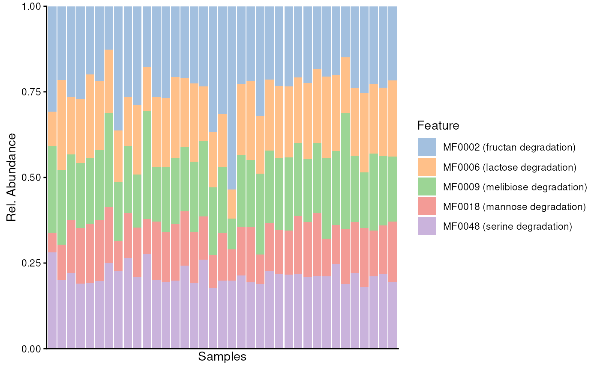
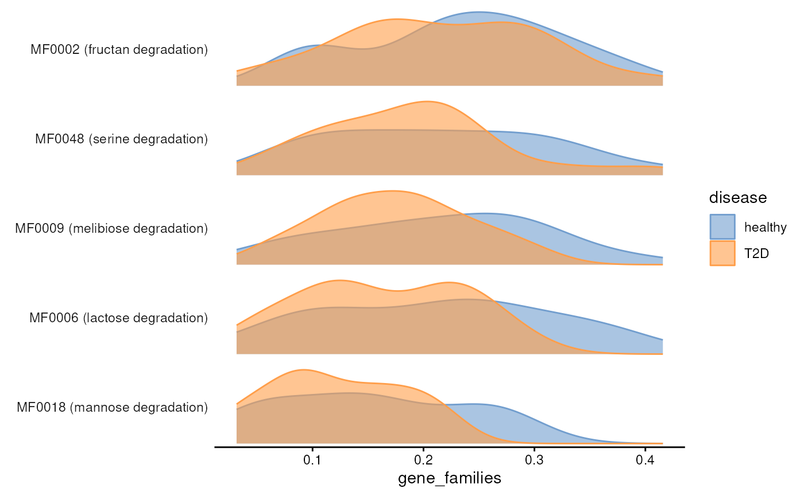
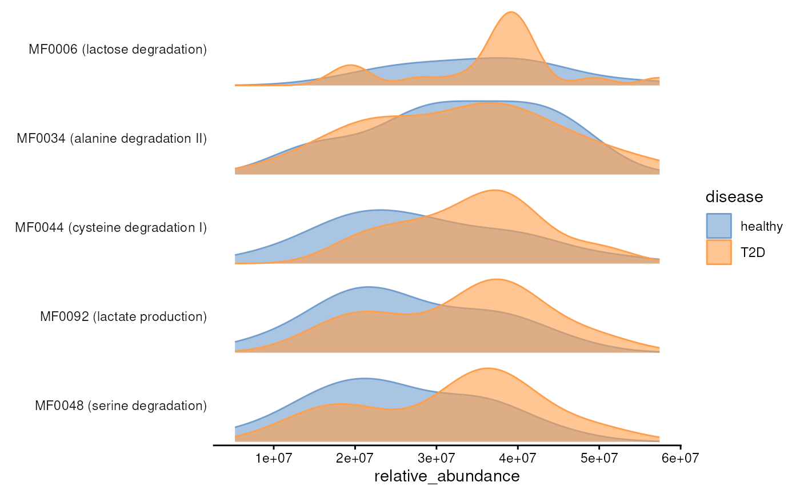
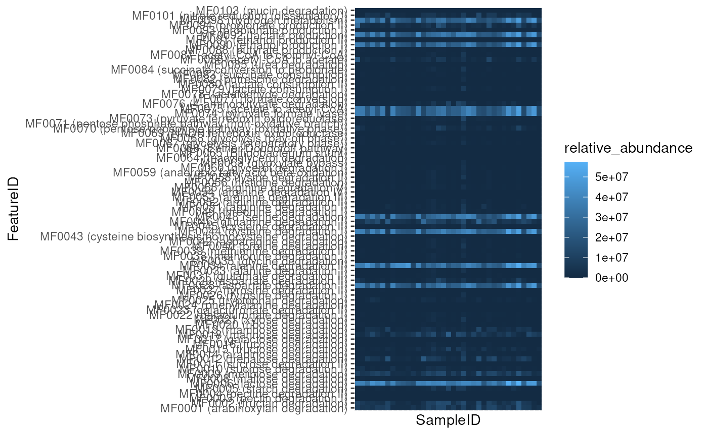

vignettes/comparison.Rmd
comparison.Rmd
library(ariadne)
library(curatedMetagenomicData)
#> Loading required package: SummarizedExperiment
#> Loading required package: MatrixGenerics
#> Loading required package: matrixStats
#>
#> Attaching package: 'MatrixGenerics'
#> The following objects are masked from 'package:matrixStats':
#>
#> colAlls, colAnyNAs, colAnys, colAvgsPerRowSet, colCollapse,
#> colCounts, colCummaxs, colCummins, colCumprods, colCumsums,
#> colDiffs, colIQRDiffs, colIQRs, colLogSumExps, colMadDiffs,
#> colMads, colMaxs, colMeans2, colMedians, colMins, colOrderStats,
#> colProds, colQuantiles, colRanges, colRanks, colSdDiffs, colSds,
#> colSums2, colTabulates, colVarDiffs, colVars, colWeightedMads,
#> colWeightedMeans, colWeightedMedians, colWeightedSds,
#> colWeightedVars, rowAlls, rowAnyNAs, rowAnys, rowAvgsPerColSet,
#> rowCollapse, rowCounts, rowCummaxs, rowCummins, rowCumprods,
#> rowCumsums, rowDiffs, rowIQRDiffs, rowIQRs, rowLogSumExps,
#> rowMadDiffs, rowMads, rowMaxs, rowMeans2, rowMedians, rowMins,
#> rowOrderStats, rowProds, rowQuantiles, rowRanges, rowRanks,
#> rowSdDiffs, rowSds, rowSums2, rowTabulates, rowVarDiffs, rowVars,
#> rowWeightedMads, rowWeightedMeans, rowWeightedMedians,
#> rowWeightedSds, rowWeightedVars
#> Loading required package: GenomicRanges
#> Loading required package: stats4
#> Loading required package: BiocGenerics
#> Loading required package: generics
#>
#> Attaching package: 'generics'
#> The following objects are masked from 'package:base':
#>
#> as.difftime, as.factor, as.ordered, intersect, is.element, setdiff,
#> setequal, union
#>
#> Attaching package: 'BiocGenerics'
#> The following objects are masked from 'package:stats':
#>
#> IQR, mad, sd, var, xtabs
#> The following objects are masked from 'package:base':
#>
#> anyDuplicated, aperm, append, as.data.frame, basename, cbind,
#> colnames, dirname, do.call, duplicated, eval, evalq, Filter, Find,
#> get, grep, grepl, is.unsorted, lapply, Map, mapply, match, mget,
#> order, paste, pmax, pmax.int, pmin, pmin.int, Position, rank,
#> rbind, Reduce, rownames, sapply, saveRDS, table, tapply, unique,
#> unsplit, which.max, which.min
#> Loading required package: S4Vectors
#>
#> Attaching package: 'S4Vectors'
#> The following object is masked from 'package:utils':
#>
#> findMatches
#> The following objects are masked from 'package:base':
#>
#> expand.grid, I, unname
#> Loading required package: IRanges
#> Loading required package: Seqinfo
#> Loading required package: Biobase
#> Welcome to Bioconductor
#>
#> Vignettes contain introductory material; view with
#> 'browseVignettes()'. To cite Bioconductor, see
#> 'citation("Biobase")', and for packages 'citation("pkgname")'.
#>
#> Attaching package: 'Biobase'
#> The following object is masked from 'package:MatrixGenerics':
#>
#> rowMedians
#> The following objects are masked from 'package:matrixStats':
#>
#> anyMissing, rowMedians
#> Loading required package: TreeSummarizedExperiment
#> Loading required package: SingleCellExperiment
#> Loading required package: Biostrings
#> Loading required package: XVector
#>
#> Attaching package: 'Biostrings'
#> The following object is masked from 'package:base':
#>
#> strsplit
library(mia)
#> Loading required package: MultiAssayExperiment
#> This is mia version 1.17.9
#> - Online documentation and vignettes: https://microbiome.github.io/mia/
#> - Online book 'Orchestrating Microbiome Analysis (OMA)': https://microbiome.github.io/OMA/docs/devel/
library(miaViz)
#> Loading required package: ggplot2
#> Loading required package: ggraph
#>
#> Attaching package: 'miaViz'
#> The following object is masked from 'package:mia':
#>
#> plotNMDS
# Load gene family experiment
genes <- curatedMetagenomicData(
"SankaranarayananK_2015.gene_families",
dryrun = FALSE
)
# Extract experiment
genes <- genes[[1]]
# Process experiment
genes <- processGeneFamilies(genes)
# Print experiment
genes
#> class: TreeSummarizedExperiment
#> dim: 1067991 37
#> metadata(0):
#> assays(1): gene_families
#> rownames(1067991): UniRef90_A5KNK6|g__Blautia.s__Ruminococcus_torques
#> UniRef90_A5ZT60|g__Blautia.s__Blautia_obeum ...
#> UniRef90_A0A2B7JUY7|g__Cutibacterium.s__Cutibacterium_acnes
#> UniRef90_W4UE92|g__Cutibacterium.s__Cutibacterium_acnes
#> rowData names(4): GeneID Taxon Genus Species
#> colnames(37): CA01 CA02 ... CA40 CA41
#> colData names(23): study_name subject_id ... BMI smoker
#> reducedDimNames(0):
#> mainExpName: NULL
#> altExpNames(0):
#> rowLinks: NULL
#> rowTree: NULL
#> colLinks: NULL
#> colTree: NULL
gmm <- importModules("GMM")
# gmm <- gmm[1:30]
ko.uniref90 <- importMapping(
"ChocoPhlAn",
from = "ko",
to = "uniref90"
)
#> Retrieving mappings from /github/home/.cache/R/ariadne/213819235d6a_map_ko_uniref90.txt.gz.
rowData(genes)$Taxon <- gsub(".", "|", rowData(genes)$Taxon, fixed = TRUE)
uniref90.tax <- split(rowData(genes)$Taxon, rowData(genes)$GeneID)
modules <- mapModules(
gmm,
list(ko.uniref90, uniref90.tax),
mode = "andor",
remove.empty = TRUE
)
#> 793 items were mapped to 63 modules.
genes <- addModules(
genes,
modules,
by = 1L,
group = "taxonomy"
)
altExp(genes, "modules") <- agglomerateByModule(
genes,
by = 1L,
group = names(modules)
)
top.mods <- altExp(genes, "modules") |>
getTop(assay.type = "gene_families")
genes <- swapAltExp(
genes,
name = "modules",
saved = "features",
withColData = FALSE
)
plotAbundance(
genes[top.mods, ],
assay.type = "gene_families",
as.relative = TRUE,
order.col.by = "disease"
)
plotAbundanceDensity(
genes,
assay.type = "gene_families",
n = 5,
layout = "density",
colour.by = "disease"
)
# Load relative abundance experiment
tse <- curatedMetagenomicData(
pattern = "SankaranarayananK_2015.relative_abundance",
dryrun = FALSE,
counts = TRUE,
rownames = "short"
)
#>
#> $`2021-03-31.SankaranarayananK_2015.relative_abundance`
#> dropping rows without rowTree matches:
#> k__Bacteria|p__Actinobacteria|c__Coriobacteriia|o__Coriobacteriales|f__Coriobacteriaceae|g__Collinsella|s__Collinsella_stercoris
#> k__Bacteria|p__Actinobacteria|c__Coriobacteriia|o__Coriobacteriales|f__Coriobacteriaceae|g__Enorma|s__[Collinsella]_massiliensis
#> k__Bacteria|p__Firmicutes|c__Bacilli|o__Lactobacillales|f__Carnobacteriaceae|g__Granulicatella|s__Granulicatella_elegans
#> k__Bacteria|p__Proteobacteria|c__Betaproteobacteria|o__Burkholderiales|f__Sutterellaceae|g__Sutterella|s__Sutterella_parvirubra
# Extract experiment
tse <- tse[[1]]
tse
#> class: TreeSummarizedExperiment
#> dim: 365 37
#> metadata(0):
#> assays(1): relative_abundance
#> rownames(365): species:[Ruminococcus] torques species:[Ruminococcus]
#> gnavus ... species:Staphylococcus capitis species:Malassezia
#> restricta
#> rowData names(7): superkingdom phylum ... genus species
#> colnames(37): CA01 CA02 ... CA40 CA41
#> colData names(23): study_name subject_id ... BMI smoker
#> reducedDimNames(0):
#> mainExpName: NULL
#> altExpNames(0):
#> rowLinks: a LinkDataFrame (365 rows)
#> rowTree: 1 phylo tree(s) (10430 leaves)
#> colLinks: NULL
#> colTree: NULL
gmm <- importModules("GMM")
ko.uniref90 <- importMapping("ChocoPhlAn", "ko", "uniref90")
#> Retrieving mappings from /github/home/.cache/R/ariadne/213819235d6a_map_ko_uniref90.txt.gz.
modules <- mapModules(
gmm,
ko.uniref90,
mode = "andor",
uniprot = TRUE,
remove.empty = TRUE
)
#> 317988 taxa were queried from UniProt.
#> 40702 items were mapped to 82 modules.
tse <- addModules(tse, modules)
altExp(tse, "modules") <- agglomerateByModule(
tse,
by = 1L,
group = names(modules)
)
top.mods <- altExp(tse, "modules") |>
getTop(assay.type = "relative_abundance")
tse <- swapAltExp(
tse,
name = "modules",
saved = "features",
withColData = FALSE
)
plotAbundanceDensity(
tse,
layout = "density",
n = 5,
assay.type = "relative_abundance",
colour.by = "disease")
library(ggplot2)
mse <- meltSE(tse, assay.type = "relative_abundance", add.col = TRUE)
ggplot(mse, aes(x = SampleID, y = FeatureID, fill = relative_abundance)) +
geom_tile() +
theme(axis.text.x = element_blank(),
axis.ticks.x = element_blank())